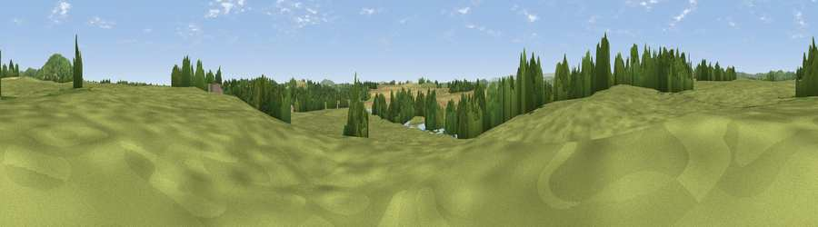

Viewpoint near Kenchester
#37954 in England · top 93% of its area beats it · near KenchesterThe view, rendered

A 360° render of this exact spot computed from the terrain model, tree cover and land cover — summer colours, afternoon light, calibrated against photographs of famous viewpoints. Real trees, hedges and buildings will differ in detail.
The panorama
Grey silhouette: terrain skyline in each direction (720 bearings, Earth curvature and refraction included). Dashed green: skyline with trees (+15 m) and buildings (+8 m) as obstacles. Blue strip: how far the ground is visible on each bearing.
Where the view opens
Wedge length = distance to the farthest visible ground on that bearing (vegetation-aware). Rings at 10, 25 and 50 km.
What fills the view
59% grassland · 21% cropland · 20% woodland ·
Angular shares of the visible panorama (visual magnitude), not map area. Landscape diversity 0.44 (0–1 Shannon).
Key numbers
More beautiful places nearby
The staircase of upgrades: each row has a higher view potential than everything closer. Driving times are estimates from straight-line distance, calibrated against real road routing — check an actual route before setting out.
| Place | Direction | Drive | Score |
|---|---|---|---|
| Breinton Common | SE · 2 km | ~6 min | 61.0 |
| Viewpoint near Tillington Common | NNE · 3 km | ~8 min | 65.2 |
| Viewpoint near Byford | WNW · 4 km | ~9 min | 72.4 |
| Round Oak Hill | NNE · 5 km | ~11 min | 75.4 |
| Viewpoint near Norton Canon | NW · 7 km | ~15 min | 78.5 |
| Viewpoint near Norton Canon | NW · 8 km | ~16 min | 79.3 |
| Viewpoint near Weobley | NNW · 8 km | ~17 min | 79.7 |
| Merbach Hill | W · 14 km | ~25 min | 81.1 |
52.07313, -2.81993 · source: osm viewpoint · position refined by local search. Computed location — check access rights before visiting.